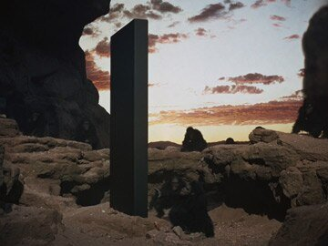

2001: A Space Odyssey, Still (the Monolith)
Stanley Kubrick · 1968 · Film, colour (frame)
In copyright. Look and learn: shown for study, not for download.
Stanley Kubrick first wanted the monolith to be a transparent tetrahedron, as in Arthur C. Clarke's story The Sentinel. The London firm asked for a 12-foot plexiglas pyramid recommended a flat slab instead; Kubrick found the clear prop too glassy on set, and the art director Anthony Masters suggested a matte black surface. The Dawn of Man backgrounds are still photographs taken at the Spitzkoppe mountains in what was then South West Africa.